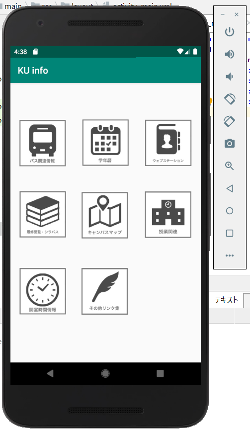

神奈川大学の学生にとって必要な情報(バス時刻表、ウェブステーション、ドットキャンパス、シラバス、図書館やパソコン室の開室時間、キャンパスマップ、学年暦など)をまとめ、今まで以上に学生が情報を取り入れやすくするシステムを開発する
・学生に必要不可欠な情報がまとめられているホームページは存在するもののリンクの場所がばらばらで参照しづらい
・大学のアプリに関しては他大学においても公開されているものはかなり限られている
・大学生はスマホ所持率も高く、確認する機会も多いため、アプリなら既存のものより気軽に情報を確認しやすいのではないか

・レイアウトを整え、画像を画面上に添付する
・画像をタップすると外部ウェブサイトまたはリンクがまとめられた別画面に飛ぶ
・chromeなどのブラウザーに飛ばずに、アプリケーション内でサイトを確認する→webview
・IDやパスワードが必要な項目に関してどのように参照するか(ログインが必要なものと不必要なものを分類)
・学生にとってよく確認する項目は何か(自分だけでなく多数の学生に確認をとる必要性)
・その他に付加できる機能はあるか(既存のものより使いやすい要素の導入)
カッコ内は今後やるべきことになります。
9/30の発表にて、神奈川大学に実際通っている学生がどのような機能があると便利だと思えるのかということについて聞いてみたところ、以下のことが求められていると分かった。
【欲しい機能】
・大学までの道路交通情報などのバスや電車以外で通学している人のための情報
・バス時刻表以外に、バス定期申込期間に関する情報(カレンダー形式だと見やすいかも)
・バスの乗り換えがスムーズに行える電車の到着時刻(乗換案内では間に合う時間でも、混雑でバスに乗車できず遅刻するケースを防ぐ)
・シラバスのほかに付加できる講義に関する情報(就活による欠席は考慮されるのかということなど)
※バス定期申込期間については大学ホームページに掲載があったためURLに飛ぶ形式でも製作可能
【その機能を加えるため必要なプログラム】※現時点で必ず求められるもののみ記載
・道路交通情報を外部ウェブサイトから取り入れるプログラム
・カレンダーを表示するプログラム(定期申込期間や学年暦をもとに作成)
※バス定期申込期間については大学ホームページに掲載があったためURLに飛ぶ形式でも製作可能
また、制作していくにあたっての新たな懸念点について、『湘南ひらつかキャンパスの移転が近いため、アプリの成果は得られても実際に使用される期間が短いのではないか』ということが挙げられた。
このことから、湘南ひらつかキャンパスの情報をまとめつつ、プログラム内のURLを書き換えるだけで簡単に情報をほかのキャンパスに変えられるように制作していく必要性があると考えられる。
完成イメージ図をもとに本アプリの基本となる画面を作成します(アイコンはフリー画像を使用)

【作成方法】
・作成した画像をアプリケーション内のファイルにコピーする
・ファイルに入れた画像のサイズを調整し、activity_main.xmlに表示させる(imageviewを使用)
・ある程度の画像の位置をGUIで配置し、細かい位置の調整を数値を入力して行う。(ここで数値を入力しないとエラーが発生しエミュレータが動作しない。)
・サンプルアプリ2つの完成
・サンプルで使用したプログラムを本アプリに使用、動作テスト(基本機能の搭載)
・欲しい機能についてどのように取り入れるかより深く構想を練る→サンプルからいろいろ試し始める